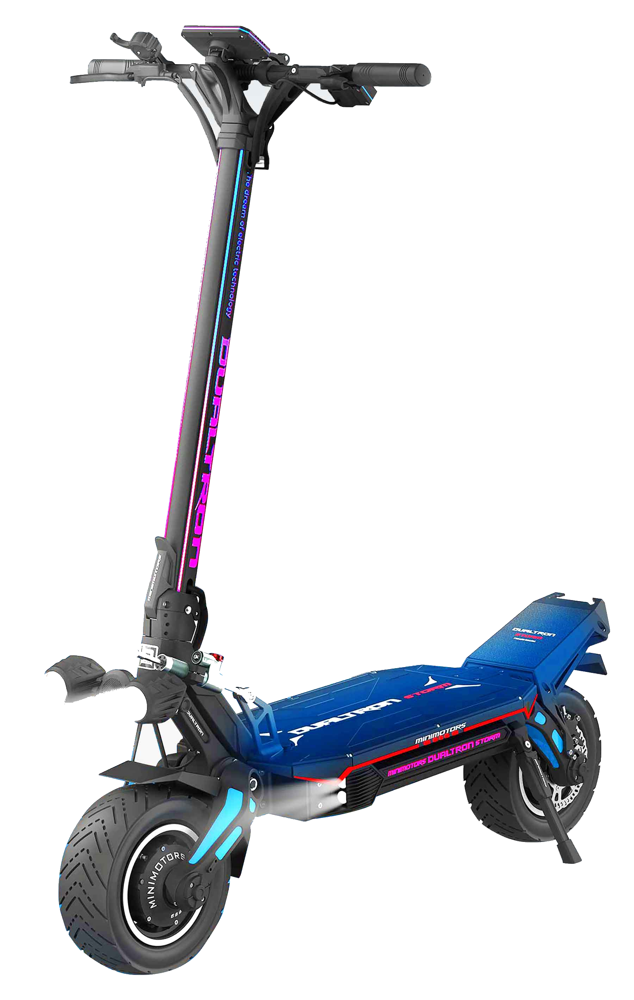
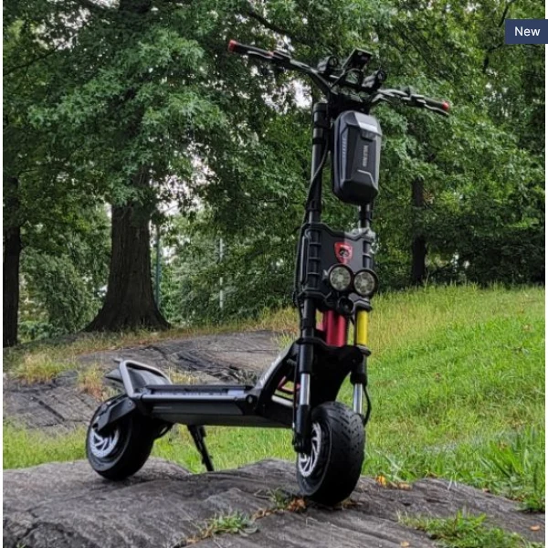

Reparação de baterias
Problemas de autonomia, carregamento ou desempenho? Fazemos o diagnóstico da bateria.
Pedir orçamento ↗
GAIA SCOOTER REPAIR · VILA NOVA DE GAIA
Especialistas em reparação e manutenção de trotinetes elétricas em Vila Nova de Gaia.
SERVIÇO COMPLETO
Desde um furo inesperado a uma revisão completa, tratamos cada trotinete com o cuidado que merece.
Problemas de autonomia, carregamento ou desempenho? Fazemos o diagnóstico da bateria.
Pedir orçamento ↗Substituição de pneus e câmaras de ar, reparação de furos e afinação.
Pedir orçamento ↗Analisamos falhas de potência, ruídos e problemas no motor elétrico.
Pedir orçamento ↗Manutenção, afinação e substituição para uma travagem segura e eficaz.
Pedir orçamento ↗Cablagem, controladores e sensores: encontramos a origem das falhas elétricas.
Pedir orçamento ↗Resolvemos problemas de display, comandos e indicadores da tua trotinete.
Pedir orçamento ↗Revisão, limpeza, afinação e verificação dos componentes principais.
Pedir orçamento ↗Identificamos a avaria e avaliamos o estado geral antes de avançar.
Pedir orçamento ↗TRABALHAMOS COM AS PRINCIPAIS MARCAS
A tua marca não está na lista? Fala connosco ↗

A OFICINA
Na Gaia Scooter Repair, trabalhamos para manter a tua mobilidade em movimento. Oferecemos serviços de diagnóstico, reparação e manutenção de trotinetes elétricas, com atenção à qualidade, segurança e satisfação de cada cliente.
Foco em trotinetes elétricas e nos seus componentes.
Percebemos a avaria antes de propor uma solução.
Orçamento explicado, sem surpresas pelo caminho.
Componentes compatíveis com a tua trotinete.
SIMPLES E TRANSPARENTE
Tratamos de tudo contigo, desde o primeiro contacto até à tua próxima viagem.
Preenche o formulário, liga-nos ou envia uma mensagem pelo WhatsApp.
Conta-nos a marca, o modelo e o que está a acontecer.
Analisamos a avaria e apresentamos uma proposta clara.
Com a tua aprovação, tratamos da reparação e avisamos-te quando estiver pronta.
MÃO NA MASSA
Uma boa reparação vê-se no resultado. Espreita o ambiente de oficina onde a tua trotinete recebe atenção especializada.
Imagens ilustrativas. Em breve, partilharemos aqui reparações realizadas pela nossa equipa.
A TUA OPINIÃO CONTA
Estamos a preparar este espaço para partilhar avaliações reais dos nossos clientes. Nunca publicamos testemunhos inventados.
Depois da tua reparação, conta-nos como correu.
TENS DÚVIDAS?
Não encontraste o que procuravas? Estamos deste lado para ajudar.
Fala connosco ↗O valor depende da avaria, dos componentes e do modelo. Depois de percebermos o problema, apresentamos um orçamento antes de avançar.
O prazo varia consoante o diagnóstico, a reparação e a disponibilidade das peças. Indicamos uma estimativa após avaliar a trotinete.
Trabalhamos com várias marcas, incluindo Xiaomi, Segway-Ninebot, KuKirin, Dualtron, Navee, Cecotec e NIU. Contacta-nos para confirmar o teu modelo.
Sim. Explica-nos o que se passa e avaliamos a melhor forma de dar seguimento ao teu pedido, sem obrigação de avançar.
Sim, avaliamos problemas de bateria e autonomia, e tratamos de furos, câmaras de ar e substituição de pneus.
Recomendamos que nos contactes antes de te deslocares, para confirmarmos disponibilidade e os próximos passos.
Claro. Podes anexar fotografias ao formulário. Ao enviar o pedido, serás encaminhado para o WhatsApp para o partilhares connosco.
VAMOS RESOLVER ISSO
Preenche os dados e prepara a tua mensagem. O pedido será enviado diretamente para a nossa equipa pelo WhatsApp.
Sem compromisso.
Orçamento transparente antes de qualquer reparação.
PASSA POR CÁ
Precisaste de ajuda? Estamos prontos para ouvir o que se passa com a tua trotinete.